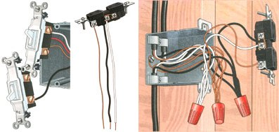

(ILLUSTRATIONS: THOMAS MOORE)
Left: Replacing a three-way switch. Locate terminals according to color and/or position, then transfer one wire at a time from the old switch (top) to the new switch (bottom). Middle: A receptacle with hot, neutral, and ground pigtail wires attached. Right: A receptacle attached to three cables with the use of pigtail wires.